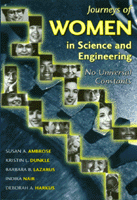

<body bgcolor="#FFFFFF" text="#000000" link="#0000FF" vlink="#CC0000" alink="#CC0000"><center><hr width="350" size="1" align="center" noshade>A rich resource of personal profiles of 88 women in the sciences and engineering<hr width="350" size="1" align="center" noshade><p><a href="https://cdcshoppingcart.uchicago.edu/Cart/ChicagoBook.aspx?ISBN=9781566395274&&PRESS=temple" target="_top">Buy this book!</a> | <a href="https://cdcshoppingcart.uchicago.edu/Cart/Cart.aspx?PRESS=temple" target="_top">View Cart</a> | <a href="https://cdcshoppingcart.uchicago.edu/Cart/Cart.aspx?PRESS=temple" target="_top">Check Out</a></p><p></p></center><!--none//--><h1>Journeys of Women in Science and Engineering</h1>
<H2>No Universal Constants</H2>
<h3>Susan A. Ambrose, Kristin L. Dunkle, Barbara B. Lazarus, Indira Nair and Deborah A. Harkus</h3>
<P>cloth 1-56639-527-5 $47.50, Jun 97, <FONT COLOR=#990033>Out of Stock Unavailable</FONT>
<br>paper 1-56639-528-3 $29.95, Nov 99, <FONT COLOR=#990033>Out of Stock Unavailable</FONT>
<BR> 512 pp
7x10
140&nbsp;tables 152&nbsp;halftones
</P><BLOCKQUOTE><I>"This is a book to be savored, since each profile can be read separately and the book then set aside until one embarks on the next journey with these extraordinary and, at the same time, ordinary females."</I>
<BR>&#151<B><I>Science Books & Films</I></B><I></I></BLOCKQUOTE>
<P>Today the image of the scientist is still that of a white man in a white lab coat. This book questions this stereotype and the assumption that the practitioners of science and engineering have a uniform look and follow one particular path through life. The scientists and engineers featured in this book are all women. They come from different races, ethnicities, and socioeconomic backgrounds. They have different sexual orientations. Some have disabilities.
<P>The core of this important book is 88 profiles with photographs of women scientists and engineers whose diversity is stunning. <I>Journeys of Women in Science and Engineering</I> includes research scientists and engineers in areas from biochemistry to mathematics, from neuroscience to computer science, from animal science to civil engineering. It includes those who have made careers in public service&#151people like Dr. Joycelyn Elders, the recent U.S. Surgeon General; Dr. Susan Love, the breast cancer activist; and Rhea L. Graham, the first woman and first African American director of the Bureau of Mines. It includes Nobel Prize winners, beginning assistant professors, division directors of corporations, and even an engineering school dean.
<P>The indexes by field of speciality make it easy for the reader to compare the life stories of, for example, all the chemical engineers or all the mathematicians. There is also an index by employment sector. The book begins with a thorough introduction to the history of women in science and engineering.
<BR>&nbsp;<h2>Excerpt</h2><P>Excerpt available at <a href="http://www.temple.edu/tempress">www.temple.edu/tempress</a></p>
<BR>&nbsp;<h2>Reviews</h2>
<P><I>"...an impressive resource... Throughout the collection, the authors meet their double objective: to show the 'diverse journeys' that women scientists take in life and 'the joy of doing the work, the satisfaction of intellectual challenge and achievement, the excitement of discovery, creation, and service, and the fulfillment of a good life's work.' They show us and all considering a career in science and engineering honest pictures of the pleasures, the problems, and the price of those choices."</I>
<BR>&#151<B><I>Harvard Educational Review</I></B>
<P><I>"This book belongs in the middle or high school library and in the hands of any young woman interested in science."</I>
<BR>&#151<I><B>The Science Teacher</B></I>
<P><I>"Both famous and little-known, average women are included, confirming the ability to participate in scientific and engineering careers without being superwomen."</I>
<BR>&#151<B><I>Feminist Collections</I></B>
<p><i>"Their stories demonstrate that there are a number of options available to female scientists other than academia."</i>
<br>&#151<b><i><a href="http://www.findarticles.com/p/articles/mi_qa3797/is_200012/ai_n8917488" target="new">ASEE Prism</a></i></b>
<p><i>"The spirit of this book is aptly conveyed by its subtitle. The eighty-eight profiles in this volume display the astonishing variety and diversity of women in science.... One of the great assets of this book is its 31-page introductory essay, "Women, Science, Engineering, and Technology through the Ages," which provides a comprehensive introduction to the history of women in science and technology."</i>
<br>&#151<b><a href="http://www.awm-math.org/bookreviews/NovDec00.html" target="new">Association for Women in Mathematics</a></b>
<BR>&nbsp;<h2>Contents</h2><P>
<P>Foreword &#150 Lilli Hornig
<BR>Preface: No Universal Constants?
<BR>Acknowledgments
<BR>Women, Science, Engineering, and Technology Through the Ages
<BR>Bibliography
<BR>Field Index
<BR>Employment Sector Index
</P><BR>&nbsp;<H2>About the Author(s)</H2>
<table><tr><td valign="top"><img src="/tempress/authors/1281_au1.gif" height="90" width="75"></td><td width="100%" valign="middle"><p><B>Susan A. Ambrose</B> is director of The Eberly Center for Teaching Excellence and Principal Lecturer, Department of History, at Carnegie Mellon University, Pittsburgh.</P></td></tr></table><P><P><B>Kristin L. Dunkle</B> is an independent scholar.</P>
<table><tr><td valign="top"><img src="/tempress/authors/1281_au3.gif" height="90" width="75"></td><td width="100%" valign="middle"><p><P><B>Barbara B. Lazarus</B> is Associate Provost of Academic Projects and Adjunct Professor, Department of History and the H. John Heinz III School of Public Policy and Management at Carnegie Mellon University.</P></td></tr></table><table><tr><td valign="top"><img src="/tempress/authors/1281_au4.gif" height="90" width="75"></td><td width="100%" valign="middle"><p><P><B>Indira Nair</B> is Vice Provost for Education and Associate Professor in the Department of Engineering and Public Policy at Carnegie Mellon University.</P></td></tr></table><P><P><B>Deborah A. Harkus</B> is currently working for NEXTLINK, a telecommunications carrier, in a project manager capacity to deploy new strategic technology.</P>
<BR><H2>Subject Categories</H2>
<p><A HREF="/tempress/science.html" TARGET="_top">Science</a>
<BR><A HREF="/tempress/women.html" TARGET="_top">Women's Studies</a>
<BR><A HREF="/tempress/general.html" TARGET="_top">General Interest</a>
</p>
<BR><h2 class="inpageheading">In the series</H2>
<P><I><a href="http://www.temple.edu/tempress/labor_change.html" onMouseOver="window.status='Click for other books in this series!'; return true;" onMouseOut="window.status=''; return true;" target="_top">Labor and Social Change</a></i>, edited by Paula Rayman and Carmen Sirianni.
</p><p><i>Labor and Social Change</i>, edited by Paula Rayman and Carmen Sirianni, includes books on workplace issues like worker participation, quality of work life, shorter hours, technological change, and productivity, as well as union and community organizing and ethnographies of particular occupations.</p>
<p align="center"><a href="https://cdcshoppingcart.uchicago.edu/Cart/ChicagoBook.aspx?ISBN=9781566395274&&PRESS=temple" target="_top">Buy this book!</a> | <a href="https://cdcshoppingcart.uchicago.edu/Cart/Cart.aspx?PRESS=temple" target="_top">View Cart</a> | <a href="https://cdcshoppingcart.uchicago.edu/Cart/Cart.aspx?PRESS=temple" target="_top">Check Out</a></p><p><font face="Arial" size="1"><a href="copyright.html" onMouseOver="window.status='Web Copyright Policy';return true;" onMouseOut="window.status=''" title="Web Copyright Policy">&copy;</a> 2015 <a href="http://www.temple.edu" target="new" onMouseOver="window.status='Link to Temple University home page';return true;" onMouseOut="window.status=''" title="Link to Temple University home page">Temple University</a>. All Rights Reserved. http://www.temple.edu/tempress/titles/1281_reg.html</font></p>